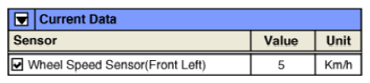

LEMON Manuals
: Even more car manuals for everyone: 1960-2025
Home
>>
Hyundai
>>
2022
>>
Elantra N Line, Standard Trans
>>
Repair and Diagnosis
>>
Accessories & Equipment
>>
Drivers Assistance Systems - ADAS
>>
Front Radar Diagnosis (Except HEV)
>>
DTC C1202-81: Wheel Speed Sensor Front-LH Invalid/No Signal
>>
DTC Information And Inspection
>>
DTC Data Analysis
DTC Data Analysis
Plug GDS to Data Link Connector (DLC).
Diagnose ESP (ESC) and select the "Front Left Wheel Speed Sensor" parameter in the "Current Data" menu of GDS.
Monitor if the value changes according to vehicle speed.
Specification:
Vary by vehicle speed

Courtesy of HYUNDAI MOTOR AMERICA